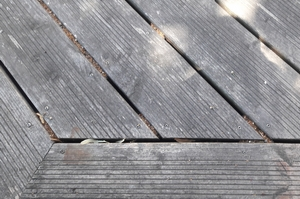

La plus simple
La pose droite
Pour les terrasses jusqu’à 4 m de large, quand les lames font toute la largeur. On les aligne en respectant le jeu : pas de coupe, pas de perte, et une pose rapide.
Nos guides de pro, en clair : choisir vos sections, préparer votre terrasse, choisir votre bois et le faire durer. Pour les professionnels comme pour les particuliers.
Notre devise« Tout ce qu’il vous faut, et juste ce qu’il vous faut ! » Un bon plan évite d’acheter trop, ou pas assez.
Le choix des profils Douglas brut et l’espacement des solives conseillé, pour les planchers courants. Votre terrasse n’est pas soutenue tous les mètres sur plots ? C’est aussi ce guide qu’il faut suivre : c’est essentiel pour la solidité de l’ouvrage et pour votre sécurité.
| Portée (mm) | Entraxe 340 à 360 mm | 400 à 420 mm | 495 à 515 mm |
|---|
Case verte : profil disponible sur stock en standard, avec les connecteurs correspondants. Pour toute autre dimension, nous consulter. Touchez une case pour la détailler.
Pour une plus grande solidité, consolidez le solivage par des entretoises en quinconce, de même section, tous les 1 m (longueur = entraxe − A). Selon vos portées, vous utiliserez ainsi vos éventuelles chutes. Sinon, prévoyez cette longueur dans votre calcul de besoin.
D’après notre guide « Planchers courants : choix des profils Douglas brut et espacements de solives conseillés ».
Avant toute chose, faites un croquis de votre terrasse. Ce plan lame par lame vous aide à calculer vos besoins précis : bois, longueurs de lames, lambourdes, plots et vis.
À surface égale, le type de pose change les pertes (les coupes), mais aussi le nombre de lambourdes, de plots et de vis nécessaires. Faites donc un dessin de votre projet avant d’acheter les matériaux. Voici les trois poses les plus courantes, à la portée de tous.
Pour les terrasses jusqu’à 4 m de large, quand les lames font toute la largeur. On les aligne en respectant le jeu : pas de coupe, pas de perte, et une pose rapide.
Quand la largeur demande plusieurs lames, les aboutages sont alignés sur une seule ligne. Laissez un jeu pour la dilatation, et posez une double lambourde.
Les aboutages sont décalés une lame sur deux, comme des pierres. Gardez une symétrie, avec des coupes de même longueur : par exemple 4 m et 2 × 1,5 m pour 7 m de large. Double lambourde sur chaque ligne d’aboutage.
Sur les plans : les pointillés sont les lambourdes, sous les lames. Les traits noirs sont les doubles lambourdes, sous les aboutages.
Chaque lame a sa lambourde : vous vissez à 20 ou 25 mm du bout, et l’eau s’écoule par le jeu.
Il permet de poser deux lames aboutées sur une lambourde simple, posée à plat, avec un jeu constant de 4 mm en bout de lame.
Deux lames bout à bout sur une seule lambourde, sans jeu : les vis sont trop près des bords, l’eau stagne et le bois finit par pourrir.
| Lame Douglas 25 × 200 | Surface d’une lame | Vis par lame, au minimum | Soit par m² |
|---|---|---|---|
| 2,00 m | 0,40 m² | 10 | 25 |
| 2,50 m | 0,50 m² | 12 | 24 |
| 3,00 m | 0,60 m² | 14 | 23,3 |
| 4,00 m | 0,80 m² | 18 | 22,5 |
Pour ne pas en manquer, comptez au moins 25 vis par m² en lames de 200 mm. En lames de 145 mm, il en faut un tiers de plus : 33 vis par m². Les espaceurs : un pour 2 vis, soit un sac de 100 pour 8 m² en 200 mm, ou pour 6 m² en 145 mm.
Les vis se retrouvent trop près des bords et l’eau stagne : le bois pourrit.
Le bois vit : il gonfle et se rétracte avec l’humidité, et force sur les vis. Trop courtes, elles ne tiennent plus et le bois éclate.
Sans huile, le Douglas grise et se tache. Protégez la surface et les coupes dès la pose.
D’après notre notice « Calepinage et types de pose » et notre guide conseil de pose.
Une simple question de goût ? Presque. Avant de choisir vos lames, voici ce qu’il faut savoir.
On les croit antidérapantes, mais dans certaines conditions elles glissent même plus que des lames lisses. Dans les rainures, l’eau a tendance à stagner. Les poussières s’y déposent sans qu’on s’en aperçoive, puis forment une petite pellicule verte, comme une mousse. L’eau et la mousse, et voilà une patinoire.
Pas de panique. Un entretien régulier suffit : à l’eau et au balai brosse, ou au nettoyeur haute pression, en pression faible ou modérée et à 70 cm au moins des lames. Laissez bien sécher. Des saturateurs antidérapants existent aussi, à passer au rouleau ou au pinceau comme un saturateur classique.
Au fond, c’est une question de goût. La tendance actuelle va plutôt vers les lames lisses.
Les lames au catalogueSource citée sur notre fiche : Nûrban, spécialiste des maisons à structure bois.
Deux classes de résistance du Douglas, deux usages. Sans autre prétention que d’expliquer nos classements, voici les repères pour les non-spécialistes.
Les deux classes résistent naturellement à l’humidité et aux risques biologiques : pourriture, insectes xylophages, termites. Sans traitement chimique, le Douglas est en classe 3 : il convient aux usages exposés à la pluie ou à l’humidité.
D’après notre fiche « Pourquoi choisir le Douglas ? » et nos tarifs Douglas brut et raboté.
Chez nous, le Douglas sèche à l’abri, lentement, à l’ancienne. C’est ce qui le rend prêt à l’emploi.
Le bois est un matériau vivant : nos sections sont indicatives, et peuvent varier de quelques millimètres selon la durée du stockage.

Le Douglas est naturellement résistant. Une huile de protection lui garde son aspect naturel, évite l’infiltration d’eau et le fendillement, et facilite l’entretien.
Pas de pluie, une température entre 15 et 35 °C, et pas en plein soleil.
Uniforme, au pinceau, à l’éponge ou à la brosse à poils courts. Sans oublier les coupes, en bout de lame.
Quelques heures plus tard, dans les 72 h. Laissez ensuite sécher 48 h.

Calcul : 1 litre pour environ 10 m² par couche, un peu moins sur un bois rugueux. Huile hautes performances spéciale Douglas : 31,90 € le pot de 1 L, 72,00 € les 2,5 L, 131,90 € les 5 L.
Selon l’exposition, sans décaper la précédente. Retouchez plus souvent les endroits de passage.
À l’eau et au balai brosse, ou au nettoyeur haute pression en pression faible, à 70 cm au moins des lames.
Passez le dégriseur concentré avant l’huile : 9,30 € la dose de 400 ml, à diluer dans 4 L, pour environ 40 m².
Piscine, jardinières, eau stagnante : protégez vos lames dès la pose. Vous éviterez d’avoir à les dégriser.
Le projet terrasseD’après notre guide conseil de pose et nos fiches huile et dégriseur.
Pour toute autre dimension, ou si vous hésitez sur une section, consultez-nous avant d’acheter : au 02 41 48 00 68, ou directement au dépôt, aux Cinq Routes.